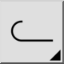

Jedná se o automatický překlad.
Panel nástrojů / Ikona:

Lomené čáry jsou propojené posloupnosti úseček a obloukových segmentů, které tvoří jeden objekt. Lomené čáry mohou být otevřené nebo uzavřené a mohou mít vlastní tloušťku čáry.